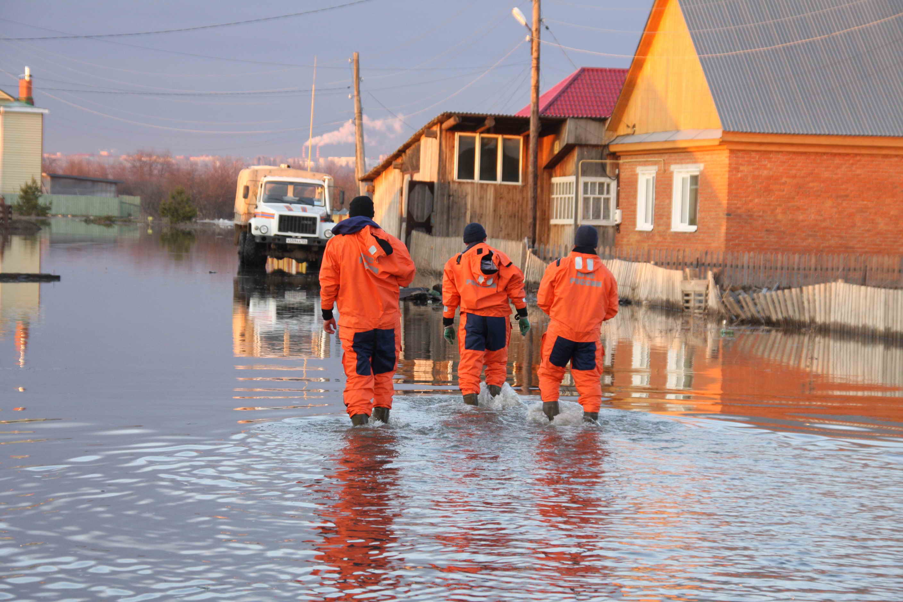
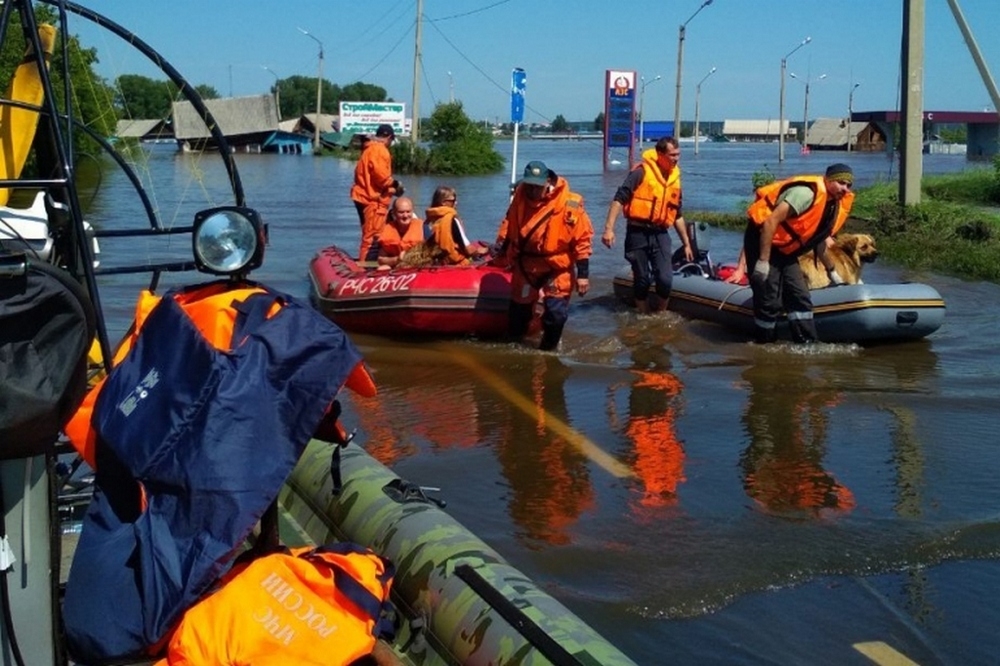

Для ликвидации чрезвычайных ситуаций создаются и используются: 1. резервный фонд Правительства РФ по предупреждению и ликвидации чрезвычайных ситуаций; 2. запасы материальных ценностей для обеспечения неотложных работ по ликвидации чрезвычайных ситуаций, находящиеся в составе государственного материального резерва; 3. резервы материальных ресурсов федеральных органов исполнительной власти; 4. резервы финансовых и материальных ресурсов субъектов РФ, органов местного самоуправления и организаций. Порядок создания, использования и восполнения резервов финансовых и материальных ресурсов определяется законодательством РФ, законодательством субъектов РФ и нормативными правовыми актами органов местного самоуправления. Номенклатура и объём резервов материальных ресурсов для ликвидации чрезвычайных ситуаций, а также контроль за их созданием, хранением, использованием и восполнением устанавливаются создающим их органом. В 2013 году Правительство РФ была принята государственная программа Российской Федерации «Защита населения и территорий от чрезвычайных ситуаций, обеспечение пожарной безопасности и безопасности людей на водных объектах», цель которой – минимизация социального, экономического и экологического ущерба, наносимого населению, экономике и природной среде от ведения военных конфликтов и вследствие их ведения, а также от совершения террористических актов, чрезвычайных ситуаций природного и техногенного характера, пожаров и происшествий на водных объектах. С учетом современного развития экономики, возникновения новых рисков техногенных катастроф и природных бедствий, МЧС России продолжает активно внедрять механизмы мониторинга, анализа и реагирования, используя передовые российские технологии профилактики и предупреждения чрезвычайных ситуаций как на федеральном, так и региональном уровнях. Важнейшим условием, обеспечивающим эффективность и своевременность проведения предупредительных мероприятий по защите населения, является прогнозирование. Федеральная служба по гидрометеорологии и мониторингу окружающей среды (Росгидромет) является федеральным органом исполнительной власти, осуществляющим функции по оказанию государственных услуг в области гидрометеорологии и смежных с ней областях, мониторинга окружающей среды, ее загрязнения, государственному надзору за проведением работ по активному воздействию на метеорологические и другие геофизические процессы.
В Краснодарском крае работает Краснодарский центр по гидрометеорологии и мониторингу окружающей среды. Служба обеспечивает круглосуточные систематические наблюдения за природными явлениями, в том числе за возникновением опасных гидрометеорологических явлений, их развитием и зоной распространения. Метеорологическая сеть Краснодарского центра состоит из 37 гидрометеорологических и авиационных станций и одной аэрологической станции. Актинометрические наблюдения проводятся в г. Краснодаре и г. Сочи (ЦГМС ЧАМ). Кроме стандартных наблюдений на сети метеорологических станций проводятся измерения гололедно-изморозных отложений, при помощи самописцев регистрируются данные температуры воздуха, влажности, осадков и продолжительности солнечного сияния; инструментально (приборы ИВО, РДВ) определяется нижняя граница облаков и метеорологическая дальность видимости; определяются с помощью дистанционных ветроизмерительных приборов (М-63М-1) направление и скорость ветра. Все материалы метеорологических наблюдений публикуются с 1961г. в Метеорологических ежемесячниках. Краснодарский центр по гидрометеорологии и мониторингу окружающей среды занимается в том числе мониторингом поверхностных вод. Гидрометцентр составляет прогнозы погоды на ближайшие сутки и последующие двое суток, которые публикуются в Ежедневном гидрометеорологическом бюллетене. Кроме поверхностных вод опасность могут представлять осадки, которые превышают среднемесячные показатели. Все наиболее существенные для человеческой деятельности осадки выпадают из облаков. Это дождь, снег, град, морось, ледяная крупа, снежные зерна и снег с дождем или мокрый снег. Некоторые виды осадков могут выпадать из воздуха, без облаков: роса, иней, изморозь, ледяные кристаллы. Однако по количеству и частоте выпадения их даже нельзя сравнивать с осадками из облаков. Ежедневно из облаков на Землю выпадает 800 млрд. тонн пресной воды в виде различных осадков, за год это составляет слой метровой толщины... Однако выпадают осадки на земной поверхности очень неравномерно и, кроме того, с очень различной регулярностью в различные сезоны. Морские синоптики предсказывают штормовую погоду, пользуясь картами погоды и данными метеорологических искусственных спутников Земли. Штормы на море вызываются циклонами, в которых есть обширные зоны ненастной погоды с сильным ветром и связанным с ним волнением моря. Наличие циклонов и их перемещение фиксируется на картах погоды и фотографиях поверхности океана со спутников. Будущее положение циклонов предвычисляется с помощью ЭВМ. Вся сумма информации о циклонах позволяет синоптикам предвидеть приход штормовой погоды. Волнение моря может возникнуть и при совершенно безоблачном небе - когда вдали от интересующего нас участка моря или побережья проходит циклон. Морские метеорологи в состоянии предсказать и такую ситуацию. Иногда волнение моря наблюдается даже в тихую погоду - это так называемая мертвая зыбь - волнение, пришедшее издалека. Для прогноза штормов на море у метеорологов также есть специальная методика. Государственные службы прогнозируют возможные опасные природные ситуации и оперативно реагируют при возникновении чрезвычайных ситуаций природного и техногенного характера для защиты населения и территорий.